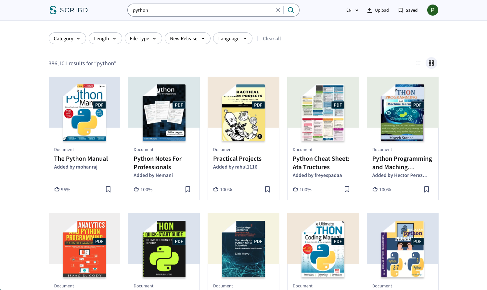
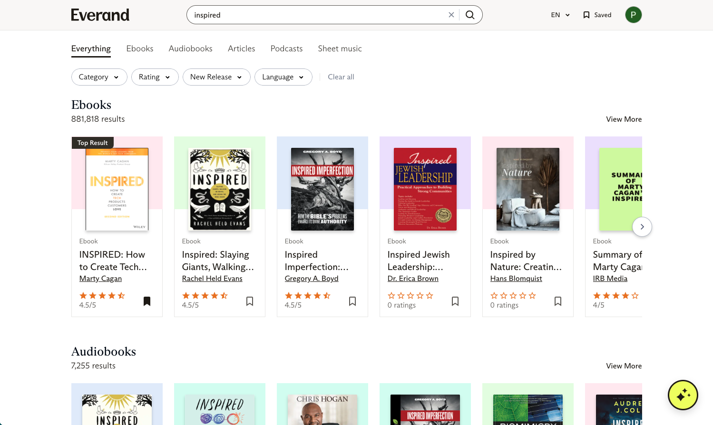

Hi, I'm Patrick Stephens
I'm a Senior Product Manager with years experience building products with great teams. My product journey started by solving problems that would increase SEO traffic. This gave me an interest in search engines so I now work on solving search problems. I'm also solving problems using Generative AI.
My past experience includes:
- - helping people find jobs at Indeed and Snagajob.
- - helping people find resources and references at Scribd.
- - helping people find answers to their questions about documents at Scribd.
- - helping readers find their next book at Everand; a subsidiary of Scribd, Inc.
I enjoy building products that help people find solutions to their problems. How can I help your users find what they need?
Let's build valuable products together
Search @ Scribd & Everand
Scribd is a digital document library used to find documents on every topic and niche.
Everand is your home for ebooks, audiobooks, podcasts, magazines, newspapers, and sheet music.
Ask AI @ Scribd
Ask AI gives you answers to your questions about the document you're viewing.


Press
- Scribd Introduces Ask AI to World Subscribers in a Beta Release
- Scribd and Everand Introduce AI-Powered Discovery
Career Guide @ Indeed
Career Guide gives jobseekers advice on how to get hired.